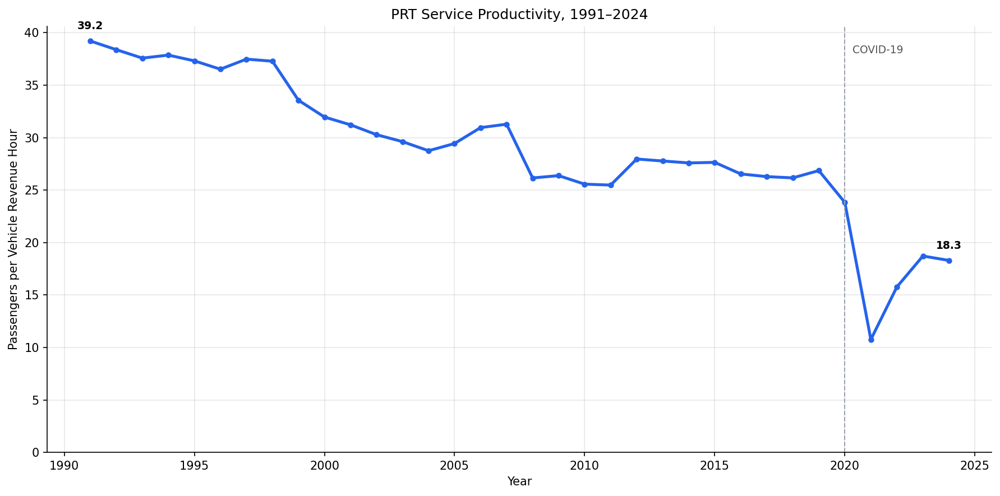
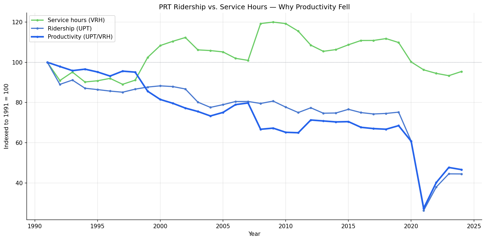
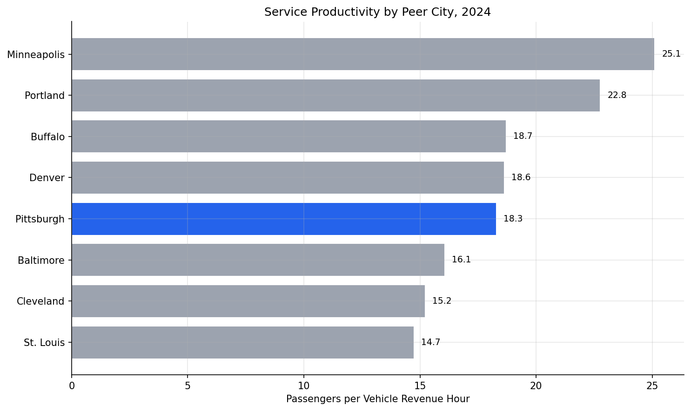
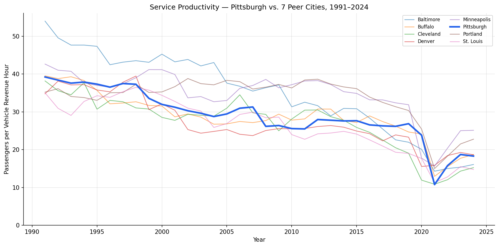
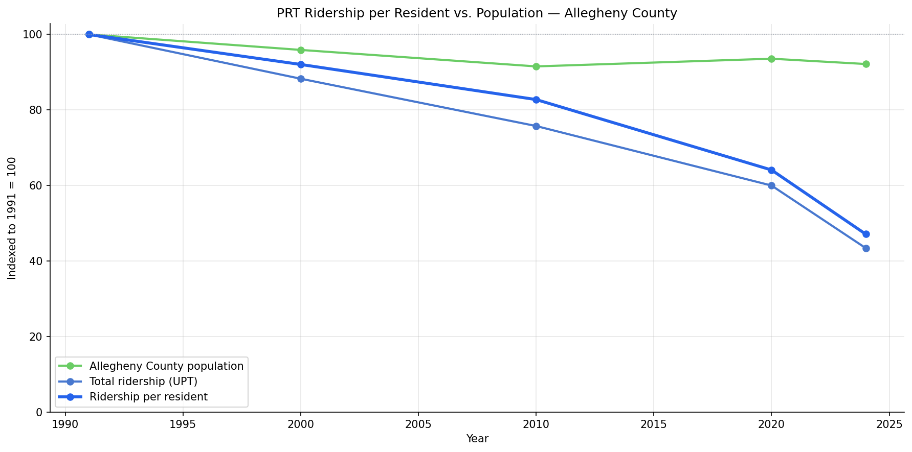

Analysis
48 - Service Productivity (Passengers per Revenue Hour)
Equity and Strategic Planning
Coverage: Coverage window unavailable for this page.
Built 2026-06-05 17:09 UTC · Commit 5dead49
Page Navigation
Analysis Navigation
Data Provenance
flowchart LR
48_service_productivity(["48 - Service Productivity (Passengers per Revenue Hour)"])
t_ntd_annual_service[("ntd_annual_service")] --> 48_service_productivity
06_ntd_service[["NTD Annual Service ETL"]] --> t_ntd_annual_service
u1_06_ntd_service[/"data/ntd-annual-service/2023_TS2.2_Service_Data.xlsx"/] --> 06_ntd_service
d1_48_service_productivity(("polars (lib)")) --> 48_service_productivity
d2_48_service_productivity(("matplotlib (lib)")) --> 48_service_productivity
classDef page fill:#dbeafe,stroke:#1d4ed8,color:#1e3a8a,stroke-width:2px;
classDef table fill:#ecfeff,stroke:#0e7490,color:#164e63;
classDef dep fill:#fff7ed,stroke:#c2410c,color:#7c2d12,stroke-dasharray: 4 2;
classDef file fill:#eef2ff,stroke:#6366f1,color:#3730a3;
classDef api fill:#f0fdf4,stroke:#16a34a,color:#14532d;
classDef pipeline fill:#f5f3ff,stroke:#7c3aed,color:#4c1d95;
class 48_service_productivity page;
class t_ntd_annual_service table;
class d1_48_service_productivity,d2_48_service_productivity dep;
class u1_06_ntd_service file;
class 06_ntd_service pipeline;
Findings
Findings: Service Productivity (Passengers per Revenue Hour)
Key findings
PRT's fixed-route service productivity fell 41% since 1991 — from 39.2 passengers per vehicle revenue hour in 1991 to 23.1 in 2024. Each hour of bus and rail service now carries about two-thirds as many riders as it did three decades ago. (Note: the agency-wide figure including ACCESS paratransit is 18.3 in 2024; see Limitations.)
Both service and ridership fell, but ridership fell faster. Over the full 1991–2024 record, PRT's fixed-route service hours dropped 26% (VRH −26%) while fixed-route ridership collapsed 57% (UPT −57%). PRT has cut substantial service — the collapse is not a story of service holding steady while riders vanished — but it couldn't cut fast enough to match the pace of ridership loss.
PRT's post-pandemic productivity drop was the steepest of all 8 peer cities. Between 2019 and 2024, PRT agency-wide productivity fell 32% (26.9 → 18.3), worse than every peer — Portland (−25%), Baltimore (−27%), Buffalo (−24%), St. Louis (−22%), Minneapolis (−21%), Cleveland (−20%), Denver (−20%).
The decline is long-run, not just a COVID shock. PRT agency-wide productivity had already fallen 31% from 1991 (39.2) to 2019 (26.9) before the pandemic. COVID then roughly doubled the cumulative loss in five years.
PRT's 2024 agency-wide productivity (18.3) is mid-pack, leaning low. It trails Minneapolis (25.1), Portland (22.8), Buffalo (18.7), and Denver (18.6), and sits above Baltimore (16.1), Cleveland (15.2), and St. Louis (14.7). Productivity fell at every peer — this is a national pattern, not a Pittsburgh-specific failure — but Pittsburgh's rate of recent decline stands out.
Population decline explains only about a tenth of the drop. PRT serves Allegheny County, which lost roughly 8% of its residents between the 1990 census (1,336,449) and 2024 (1,231,809). But fixed-route ridership fell 57% over the same span, so ridership per resident roughly halved — from 63.7 to 30.0 trips per resident per year. A log decomposition of the ridership decline attributes ~10% to fewer residents and ~90% to each remaining resident riding less. Because service hours also fell, the same split applies to the productivity decline: depopulation is a minor factor, and the collapse is overwhelmingly a demand problem.
Limitations
- Two metrics in use. Findings 1-2 and the per-capita analysis use a corrected fixed-route VRH series for PRT (see Data Quality note below). Findings 3-5 and the peer comparison charts use the NTD annual workbook (
ntd_annual_service), which aggregates all modes — mixing motor bus, light rail, the ACCESS paratransit service, and the incline — and is the only consistently available source for all 8 agencies across the full period. - ACCESS paratransit VRH reporting discontinuity.
ntd_annual_serviceexcluded ACCESS (demand-response / DR mode) VRH before 2008, then started including ~700K hours/year. This creates an artificial 18% jump in the aggregate VRH for 2008 that does not reflect real service expansion. The PRT trend and decomposition charts correct for this by subtracting DR VRH (and UPT) for 2008 onward using mode-level data fromntd_ridership. The peer comparison charts use the uncorrected agency-wide aggregate, which is internally consistent across agencies for comparison purposes. - UPT counts boardings, not riders. Unlinked passenger trips count each boarding separately, so a rider who transfers is counted more than once. Productivity here measures boardings per service hour, not unique people moved.
- VRH excludes deadhead. Vehicle revenue hours count only time in revenue service, not pull-out, layover, or repositioning, so this understates total operating effort behind each productive hour.
- Productivity is not the only goal. Lower productivity can reflect a deliberate equity choice to serve lower-density areas. The metric describes how full the service runs, not whether the service is worth running.
- Population normalization is coarse. County population is paired with the NTD record only at census/estimate years (1990/2000/2010/2020 decennial counts plus the 2024 estimate), with no annual interpolation; the 1990 count stands in for 1991 with a ~9-month offset. Allegheny County is also broader than PRT's true ridership catchment, so the per-capita figures are county-wide averages, not the usage of the population actually within reach of service. The ~10% population share is approximate but robust — even the City of Pittsburgh's steeper ~18% loss would still leave per-capita decline as the dominant factor.
Validation
- Data source verified.
uptandvrhcolumns ofntd_annual_service(NTD annual data, TS2.2). Mode-level correction usesntd_ridership(NTD monthly data). No column mapping written from memory. Allegheny County population is from the U.S. Census Bureau: decennial counts for 1990–2020 and the Vintage 2024 Population Estimates Program figure. - ACCESS correction verified. For 2007,
ntd_annual_serviceVRH (2,190,548) matchesntd_ridershipMB+LR+IP sum (~2,093K) — confirming ACCESS was not in the aggregate. For 2008,ntd_annual_serviceVRH (2,587,521) matches MB+LR+IP+DR combined (~2,609K) — confirming ACCESS was added. The corrected 2008 fixed-route VRH (1,876,019) is consistent with the documented June 2007 Port Authority service cuts. - Population discontinuity avoided. Decennial census counts and intercensal estimates use different methods; mixing a pre-2020 estimate with the 2020 census produces a spurious population jump. The decomposition uses only decennial counts plus one post-2020 estimate, so no method break falls inside the series.
- Null/missing handling. All 8 peer agencies have complete, non-null UPT and VRH for every year 1991–2024 (34 city-years each) — verified before analysis. No rows dropped.
- Aggregates sanity-checked. PRT 2024 agency-wide UPT (37.9M) and VRH (2.07M) match the figures used in Analysis 40. The corrected fixed-route 2024 values (UPT 37.0M, VRH 1.60M) are consistent with Analysis 50's mode-level breakdown.
- Direction of effects checked. Productivity fell at all 8 agencies post-COVID, consistent with the well-documented national decline in transit ridership relative to service. No directional reversal. The corrected VRH series confirms fixed-route service WAS cut substantially (−26%) and the service cuts are consistent with published news reports of Port Authority cutbacks in 2007 and subsequent years.
- Surprising result investigated. The original (uncorrected) chart showed VRH rising in 2007-08 despite documented service cuts. Investigation confirmed this was an NTD reporting change (ACCESS added to aggregate in 2008), not real service expansion. The corrected series shows fixed-route VRH declining from 2008 onward, consistent with reported service cuts.
Output

PRT service productivity line chart, 1991-2024.

PRT ridership, service hours, and productivity indexed to 1991 = 100.

Horizontal bar ranking of 2024 productivity across 8 peer cities, PRT highlighted.

Productivity trajectories 1991-2024 for all 8 peer cities, PRT highlighted.

County population, total ridership, and ridership per resident indexed to 1991 = 100.
No interactive outputs declared.
PRT ridership, service hours, and productivity for every year 1991-2024.
Preview CSV
Productivity at 1991, 2019, and 2024 for all 8 peer cities with percent changes.
Preview CSV
Allegheny County population, PRT ridership, service hours, productivity, and ridership per resident at 1991, 2000, 2010, 2020, and 2024.
Preview CSV
Methods
Methods: Service Productivity (Passengers per Revenue Hour)
Question
Has PRT's service productivity — the number of passengers carried per hour of service operated — declined over time? And if so, is the decline because ridership fell faster than service was cut (emptier buses) rather than a deliberate right-sizing of service to match demand?
Approach
- Define service productivity as unlinked passenger trips per vehicle revenue
hour:
productivity = UPT / VRH. This is the standard transit efficiency ratio — how many riders each hour of operated service actually carried. - Pull the full 1991–2024 annual record of UPT and VRH for PRT and 7 peer
cities from
ntd_annual_service. - For PRT trend and decomposition charts, build a corrected fixed-route series
to remove an NTD reporting discontinuity:
ntd_annual_serviceexcluded ACCESS paratransit (DR mode) from VRH before 2008, then started including ~700K hours/year. For years ≥ 2008, DR UPT and VRH are subtracted from the aggregate using annual sums fromntd_ridership. Peer comparison charts continue to usentd_annual_servicedirectly (consistent across all 8 agencies). - Plot PRT's productivity curve across the whole record to separate the long-run secular trend from the COVID shock.
- Decompose the ratio: index UPT, VRH, and productivity to 1991 = 100 on one chart. Shows whether service cuts or ridership loss drove the productivity change.
- Normalize the demand side by population. Allegheny County (PRT's service
area) has lost residents since 1991, so part of the ridership decline could
simply be fewer people. Split ridership into
UPT = population x trips-per-capitaand partition the 1991→2024 ridership decline between the two factors using log shares:share = ln(factor ratio) / ln(UPT ratio). This isolates how much of the drop is fewer residents versus each resident riding less. - Benchmark PRT against peers two ways: a 2024 cross-section ranking, and the full 1991–2024 trajectory for all 8 cities.
- Report percent change in productivity over the full period (1991→2024) and over the post-pandemic window (2019→2024) for every peer.
Data
ntd_annual_service: columnsntd_id,year,upt(unlinked passenger trips),vrh(vehicle revenue hours).- Filtered to the 8 peer-city NTD IDs in
PEERS; PRT isntd_id = 30022. - All 8 agencies have complete, non-null UPT and VRH for every year 1991–2024 (34 city-years each, 272 rows total) — verified before analysis, so no null handling is required.
- Allegheny County population (
COUNTY_POPULATIONinmain.py): U.S. Census Bureau decennial counts for 1990 (1,336,449), 2000, 2010, and 2020 (1,250,578), plus the Census Bureau's Vintage 2024 Population Estimates Program figure (1,231,809). The 1990 decennial count is used as the 1991 population anchor — a ~9-month offset. Population is paired with the NTD record only at these census/estimate years; no annual interpolation is done.
Output
output/prt_productivity_by_year.csv— PRT UPT, VRH, and productivity for every year 1991–2024.output/peer_productivity.csv— productivity at 1991, 2019, and 2024 for all 8 peers, with percent change over both windows.output/prt_productivity_trend.png— PRT productivity line, 1991–2024.output/supply_vs_demand_decomposition.png— PRT UPT, VRH, and productivity indexed to 1991 = 100.output/peer_productivity_2024.png— horizontal bar ranking of 2024 productivity across the 8 peers, PRT highlighted.output/peer_productivity_trends.png— productivity trajectories 1991–2024 for all 8 peers, PRT highlighted.output/per_capita_decomposition.csv— Allegheny County population, PRT UPT, VRH, productivity, and ridership per resident at 1991, 2000, 2010, 2020, 2024.output/per_capita_normalization.png— county population, total ridership, and ridership per resident indexed to 1991 = 100.
Source Code
|
Sources
| Name | Type | Why It Matters | Owner | Freshness | Caveat |
|---|---|---|---|---|---|
| ntd_annual_service | table | Primary analytical table used in this page's computations. | Produced by NTD Annual Service ETL. | Updated when the producing pipeline step is rerun. | Coverage depends on upstream source availability and ETL assumptions. |
Upstream sources (1)
|
|||||
| polars | dependency | Runtime dependency required for this page's pipeline or analysis code. | Open-source Python ecosystem maintainers. | Version pinned by project environment until dependency updates are applied. | Library updates may change behavior or defaults. |
| matplotlib | dependency | Runtime dependency required for this page's pipeline or analysis code. | Open-source Python ecosystem maintainers. | Version pinned by project environment until dependency updates are applied. | Library updates may change behavior or defaults. |